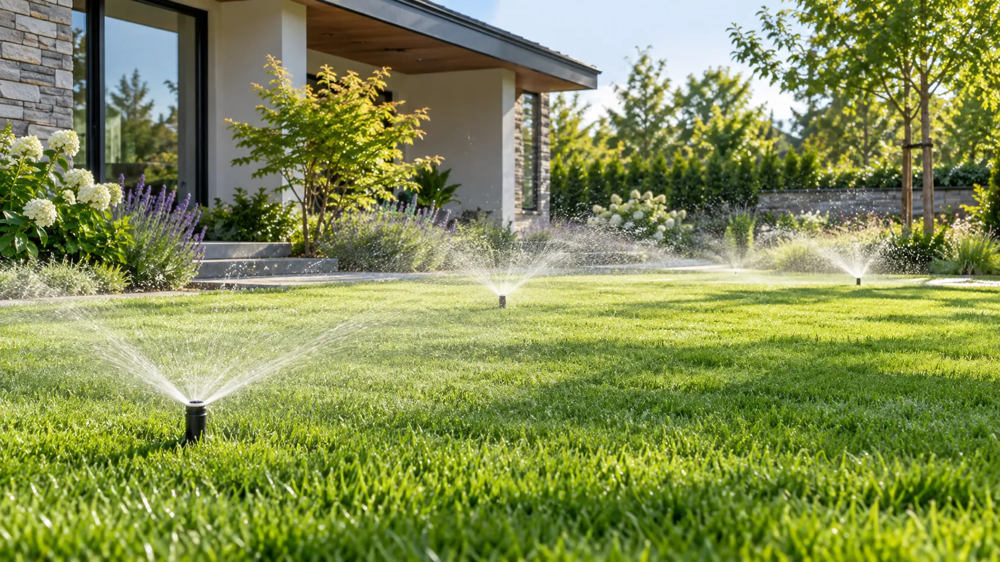
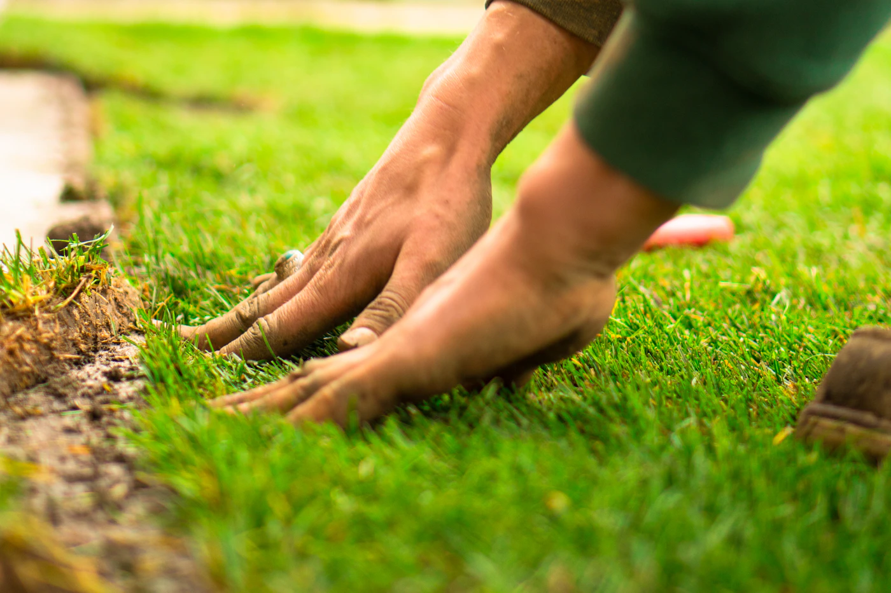
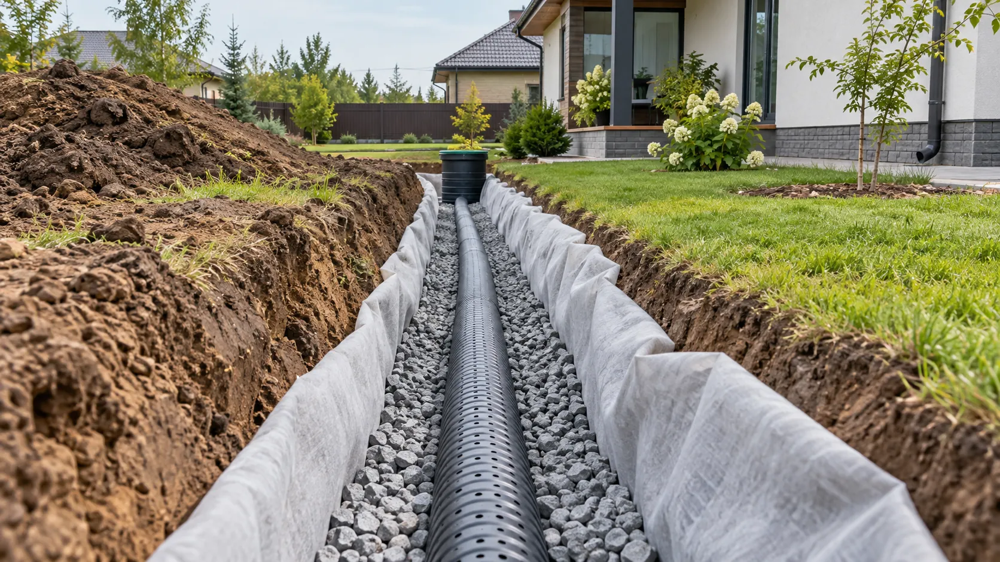

Дренаж и ливневая канализация
Отводим воду от дома, отмостки и дорожек. Устанавливаем дождеприёмники, линейные лотки, дренажные трубы в геотекстиле и ревизионные колодцы — состав системы зависит от участка.
Инженерные и ландшафтные работы для комфортного участка: отвод воды, освещение, автоматический полив и укладка газона.
Дренаж, освещение, полив и газон лучше планировать вместе с дорожками и мощением. Так коммуникации прокладываются заранее, вода отводится в нужную сторону, а готовое покрытие не приходится вскрывать после завершения работ.
Каждую систему проектируем с учётом рельефа, планировки, существующих коммуникаций и будущего использования территории.
Отводим воду от дома, отмостки и дорожек. Устанавливаем дождеприёмники, линейные лотки, дренажные трубы в геотекстиле и ревизионные колодцы — состав системы зависит от участка.
Планируем освещение дорожек, зон отдыха и растений. Прокладываем защищённые кабельные линии, устанавливаем светильники и настраиваем удобное управление.
Организуем полив по расписанию: выдвижные спринклеры для газона, капельные линии для клумб и хвойных растений, датчики дождя и контроллер.
Очищаем и выравниваем участок, готовим плодородный слой, укладываем рулонный газон, прикатываем и выполняем первый полив.
Одинаковых участков не бывает, поэтому рассчитываем работу после осмотра и замеров.
Рассчитываем отдельно дренаж, освещение, полив и газон или объединяем их в комплекс работ.
Учитываем перепады высот, тип грунта, расположение дома, дорожек и посадок.
На расчёт влияют длина труб и кабелей, количество зон, светильников и точек водосбора.
Итог зависит от выбранных труб, автоматики, светильников, газона и других материалов.
Подготовим понятную смету. После осмотра согласуем состав работ и материалы, затем зафиксируем стоимость в смете и договоре.
Получить расчётПосмотрите основные этапы и возможный результат работ.




Соседние работы можно обсудить вместе с основной задачей.